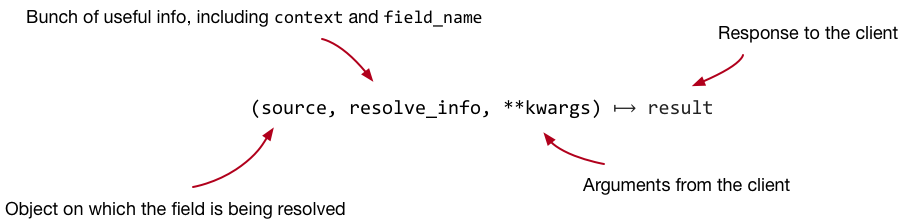
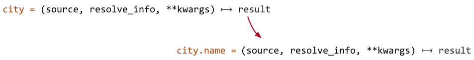

GraphQL in Python
Alex Chamberlain, Team Leader @ Bloomberg LP
@alexchamberlain
Slides: https://alexchamberlain.github.io/presentation-pylondinium-graphql-in-python/
Example Code: https://github.com/alexchamberlain/city-api/
Objective
Inspire you to investigate writing GraphQL servers in Python, including sign posting you towards open source libraries available.
What is GraphQL?
GraphQL is a query language for your API, and a server-side runtime for executing queries by using a type system you define for your data. GraphQL isn’t tied to any specific database or storage engine and is instead backed by your existing code and data.
What is GraphQL?
query country {
country(iso: "US") {
iso
name
cities {
geonameID
name
}
}
}
What is GraphQL?
query city_by_id {
london: city(geonameID: 2643743) {
geonameID
name
latitude
longitude
population
country {
iso
name
}
}
new_york: city(geonameID: 5128581) {
geonameID
name
latitude
longitude
country {
iso
name
}
}
}
GraphQL Basics
- The Schema Definition Language
- Root types: Query, Mutation and Subscription
- Resolvers implement the API: each field in a GraphQL schema is backed by a resolver.
GraphQL Resolvers
GraphQL Resolvers
GraphQL Resolvers: Default
def default_resolve_fn(source, resolve_info, **kwargs):
name = resolve_info.field_name
property = getattr(source, name, None)
if callable(property):
return property()
return property
Why shouldn't we use GraphQL?
- Largely a JS eco-system
- Many examples conflate the schema with business logic
Why should we use GraphQL?
- (Becoming) Industry Standard
- Strongly typed schema
- No more overfetching/underfetching
- Rapid product development
- Composable
- Rich eco-system
Python Support
23 repositories on graphql-python organisation on GitHub
- graphql-core: GraphQL base implementation for Python
- flask-graphql, sanic-graphql, graphene-django: Integration with common frameworks
- aiodataloader: A generic utility to be used as part of your application’s data fetching layer to provide a simplified and consistent API over various remote data sources such as databases or web services via batching and caching.
Illustrative example: the City API
- Lookup city by name, geoname ID or country.
- Lookup country by ISO name.
The Schema
type Country {
iso: String!
name: String!
cities: [City!]!
}
type City {
geonameID: Int!
name: String!
latitude: Float!
longitude: Float!
population: Int!
country: Country!
}
type Query {
country(iso: String): Country!
city(name: String, geonameID: Int): City!
}
schema {
query: Query
}
The Loader
from aiodataloader import DataLoader
from .models import Country
class CountryLoader(DataLoader):
def __init__(self, db):
super().__init__()
self.db = db
async def batch_load_fn(self, isos):
query = 'SELECT iso, name FROM country WHERE iso = any($1::text[])'
rows = await self.db.fetch(query, isos)
mapping = {
row['iso']: Country(
iso=row['iso'],
name=row['name']
) for row in rows
}
return [mapping.get(i) for i in isos]
def resolver(self, context, resolve_info, *, iso):
return self.load(iso)
def context_resolver(self, context, resolve_info):
return self.load(context.country_iso)
The Schema (2)
def build_schema():
data = pkgutil.get_data('cities', 'cities.graphql').decode()
schema = make_executable_schema(
parse_schema(data),
{
'Query': {
'country': loader_resolver('Country', CountryLoader.resolver),
'city': city_resolver
},
'Country': {
'cities': country_cities_resolver
},
'City': {
'country': loader_resolver('Country', CountryLoader.context_resolver)
}
}
)
return schema
The Server
from graphql.execution.executors.asyncio import AsyncioExecutor
from sanic import Sanic
import sanic_graphql
@app.listener('before_server_start')
async def init_graphql(app, loop):
schema = build_schema()
app.add_route(
GraphQLView.as_view(
schema=schema,
executor=AsyncioExecutor(loop=loop),
graphiql=True
),
'/graphql',
methods=['POST', 'OPTIONS']
)
class GraphQLView(sanic_graphql.GraphQLView):
def get_context(self, request):
return {
'db': request['db'],
'loaders': {
'Country': CountryLoader(request['db']),
'City': CityLoader(request['db'])
}
}
Whole example
City API in Pythonhttps://github.com/alexchamberlain/city-api/
Conclusion
- GraphQL is fantastic way to define a contract between different parts of your system.
- The support in Python is awesome.